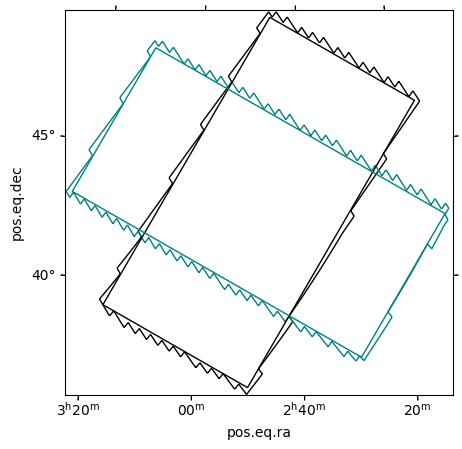

[1]:
import matplotlib.pyplot as plt
import regions
from astropy import units as u
from astropy.coordinates import SkyCoord
from mocpy import MOC
Creating MOCs out of astropy-regions.¶
The supported astropy regions are: - regions.CircleSkyRegion - regions.CircleAnnulusSkyRegion - regions.EllipseSkyRegion - regions.RectangleSkyRegion - regions.PolygonSkyRegion - regions.PointSkyRegion
The resulting MOCs will always be the smallest MOC of the required order ( chosen with max_depth) that entirely contains the region.
Circles¶
[2]:
center = SkyCoord(42, 43, unit="deg", frame="fk5")
circle = regions.CircleSkyRegion(center, radius=3 * u.deg)
moc_circle = MOC.from_astropy_regions(circle, max_depth=8)
[3]:
fig = plt.figure(figsize=(5, 5))
wcs = moc_circle.wcs(fig)
ax = fig.add_subplot(projection=wcs)
moc_circle.border(ax, wcs)
circle.to_pixel(wcs).plot();
Rings¶
[4]:
ring = regions.CircleAnnulusSkyRegion(center, 3 * u.deg, 4 * u.deg)
moc_ring = MOC.from_astropy_regions(ring, max_depth=9)
fig = plt.figure(figsize=(5, 5))
wcs = moc_ring.wcs(fig)
ax = fig.add_subplot(projection=wcs)
moc_ring.border(ax, wcs)
ring.to_pixel(wcs).plot();

Ellipses¶
[5]:
angle = 50 * u.deg
ellipse = regions.EllipseSkyRegion(center, 3 * u.deg, 6 * u.deg, angle)
ellipse_swapped = regions.EllipseSkyRegion(center, 6 * u.deg, 3 * u.deg, angle)
moc_ellipse = MOC.from_astropy_regions(ellipse, max_depth=9)
moc_ellipse_swapped = MOC.from_astropy_regions(ellipse_swapped, max_depth=9)
fig = plt.figure(figsize=(5, 5))
wcs = moc_ellipse.wcs(fig)
ax = fig.add_subplot(projection=wcs)
moc_ellipse.border(ax, wcs)
moc_ellipse_swapped.border(ax, wcs, color="red")
ellipse.to_pixel(wcs).plot()
ellipse_swapped.to_pixel(wcs).plot(color="r");
50.0 deg
140d00m00s

Rectangles/Box¶
[6]:
angle = 60 * u.deg
box = regions.RectangleSkyRegion(center, 12 * u.deg, 6 * u.deg, angle)
box_swapped = regions.RectangleSkyRegion(center, 6 * u.deg, 12 * u.deg, angle)
moc_box = MOC.from_astropy_regions(box, max_depth=8)
moc_box_swapped = MOC.from_astropy_regions(box_swapped, max_depth=8)
fig = plt.figure(figsize=(5, 5))
wcs = moc_box.wcs(fig)
ax = fig.add_subplot(projection=wcs)
moc_box.border(ax, wcs)
moc_box_swapped.border(ax, wcs, color="teal")
box.to_pixel(wcs).plot()
box_swapped.to_pixel(wcs).plot(color="teal");

Polygons¶
[7]:
vertices = SkyCoord([1, 2, 2], [1, 1, 2], unit="deg", frame="fk5")
polygon = regions.PolygonSkyRegion(vertices)
moc_polygon = MOC.from_astropy_regions(polygon, max_depth=10)
fig = plt.figure(figsize=(5, 5))
wcs = moc_polygon.wcs(fig)
ax = fig.add_subplot(projection=wcs)
moc_polygon.fill(ax, wcs, alpha=0.2)
polygon.to_pixel(wcs).plot();

Points¶
This will return the HEALPix cell that contains the point at the requested order (here it’s the cell 3663728 at order 10).
[8]:
point = SkyCoord("+23h20m48.3s +61d12m06s")
point = regions.PointSkyRegion(point)
moc_point = MOC.from_astropy_regions(point, max_depth=10)
fig = plt.figure(figsize=(5, 5))
wcs = moc_point.wcs(fig)
ax = fig.add_subplot(projection=wcs)
moc_point.fill(ax, wcs, alpha=0.2)
point.to_pixel(wcs).plot();

[9]:
moc_point
[9]:
10/3663728